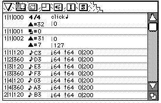
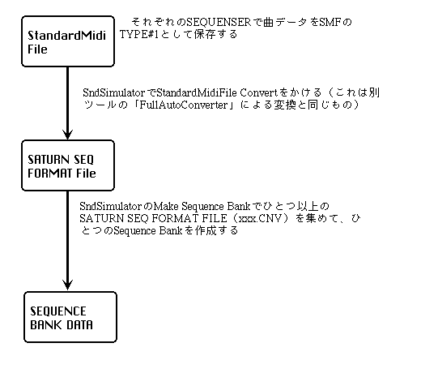

Return to menu | Go to next page
★ Basic data layout at the beginning of each track (Standard specification after Version 1.28)

1/1/000 (measure / beat / clock)
Tempo event (usually automatically inserted by the sequencer), control change BANK SELECT (# 32)
1/1/001 (measure / beat / clock)
Program change
1/1/002 (measure / beat / clock)
Control change (MAIN VOLUME # 7, loop command # 31 during loop, etc.)
After 1/1/003 (measure / beat / clock)
Note on
If the data layout is not as shown above, the sound driver may not sound correctly.
How many clocks one beat depends on the resolution of each sequencer.
Depending on the sequencer, when multiple event data are placed in the same bar / beat / clock, the order displayed on the sequencer screen and the order written to the Standard MIDI File may be switched. If you want to clarify the order of events, shift the data by one clock.
In the case of BANK SELECT (BANK CHANGE) in the song, shift the program one clock before inserting PROGRAM CHANGE. Be sure to set CONTROL CHANGE # 7 MAIN VOLUME at the beginning of each track.
★ Be sure to send the MIXER CHANGE command from the SH2 side at every MAP CHANGE (let the programmer know). If MIXER CHANGE is not issued, the CD-DA will not play and DSP effects will not be applied.
● The command buffer sent from the SH2 side to the sound (68000) side is limited to 8 commands. When the command sent from the SH2 side is processed by the sound side, the first byte is cleared at 00h. The sound driver (up to Version1.28) cycles through 8 buffers every 2msec. The order of the data sent from the SH2 side and the order of processing by the sound side may change due to a problem in the specification.Therefore, if the order in which the sound is processed is important, the command may not work as expected. There is. This will be supported by a change in the specification of Sound Driver Version 1.30.
● If you have applied Scale (Normalize) to the PCM waveform before importing it with the Tone Editor, you will not have any difficulty in raising the volume later. In addition, a separate manual is being created for volume.
▲ Saturn's sound driver processing is based on 2 msec, so even if you create sequence data that handles 1 beat as 480 clocks, 1 beat is equivalent to 250 (when the tempo is 120). It becomes resolution and plays as if it were quantized.
● Please read "Errors during SMF conversion" and "Host Interface Manual" (system I / F 3.03 (1.28)) in the same folder.
● There are two types of sound drivers: the sound driver for sound data production (SDDRV.TSK) and the actual sound driver (SDDRVS.TSK). SDDRVS.TSK is used by the main programmer, so it is really meaningful to check that the song and SE sound correctly with this driver before passing it to the main. You can use SSBug to transfer SDDRVS.TSK to the Saturn board and play songs and SEs with SndSimulator.
